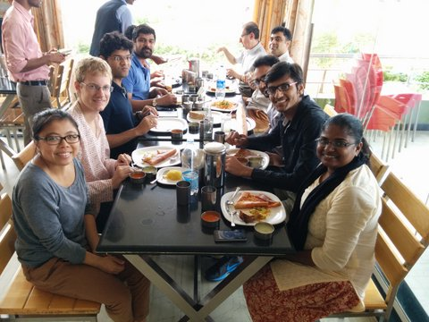
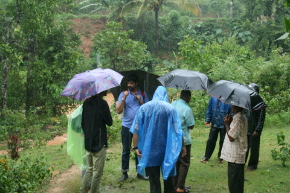
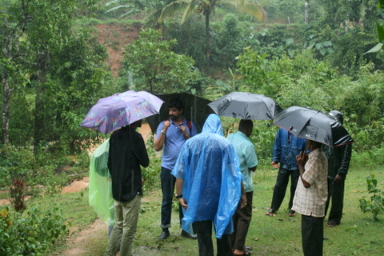

US to India: June 2015
Researchers visiting:
- Prof. Cliff Davidson, Syracuse University, NY
- Dr. Sudarsan Rachuri, National Institute of Technology, MD
- Dr. Gaurav Ameta, Washington State University, WA
- Yige Yang, Ph.D. Student,Syracuse University, NY
- Suk Han, Ph.D. Student, University of California - Berkeley, CA
- Quinn Langfitt, Ph.D. Student, Washington State University, WA
Visit and acitivities
Students Arrived around 1st of June and worked on synthesizing the collected data
Monday, 22nd June 2015
Faculty arrival at IISc followed by presentations from Prof. B. Gurumoorthy, Dr. Sudarsan Rachuri, Dr. Gaurav Ameta and Prof. Amaresh Chakrabarti.
Tuesday, 23rd June 2015
Presentations by Prof. Cliff Davidson, Gulshan Vashistha, Suk Han and Prof. Amaresh Chakrabarti in the Morning. Lunch was followed by presentations from Suman and Kiran, representing everyone's work in the center.
Wednesday, 24th June 2015
Visited a local innovator at Chikmangulur and saw his innovations in micro hydro turbines that are assisting many remote villages in accessing electricity.

 
Thursday, 25th June 2015.
Visited CSTEP and had discussion on various policy, energy and sustainbility issues.
Friday, 26th June 2015.
Workshop by Prof. Cliff Davidson on incorporating sustainability in any engineering course. Closure meeting was held from 5-6, where next steps for the center were discussed. Dinner followed the closure meeting.